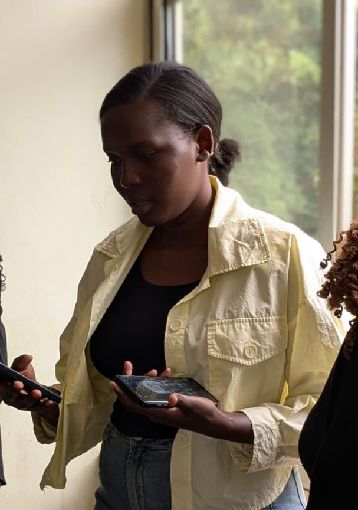

NAME: LAMARO PATRICIA · REG NO: 25/U/03844/PS
About Me
Am Patricia Lamaro, studying at Makerere University pursing Bachelors of Information System and Technolgy
I love my degree, its interesting, outgoing, challenging and brings you to your last limit everytime.But thats what l love about it mostly. it doesnt give you room for comfort at all.

interest
Since am still studying and most of my time and mind is to finish my degree excellently. l have few things in mind as per my time right now but l definitely have alot for my future and life.
Read more
My other interest at heart education wise is to do my masters degree and find what l love most about my career path because its kinda wide honeslty. I want to do what l feel is my most interest and do best so it doesnt become a job or burden.
There is another thing a job which you wake up every morning just to sustain a living and get money to because you need it but also there is this which l also want not just a job but doing what l love that makes it not feel like a job because your so good at it you dont care if its hard or easy because you chose it willingly and money follows you because of your best work at hand and heart. Now thats my total interest.
Hobbies
I will give you a glaced into my life about the things l love in the world and i will show in a little detail so enjoy